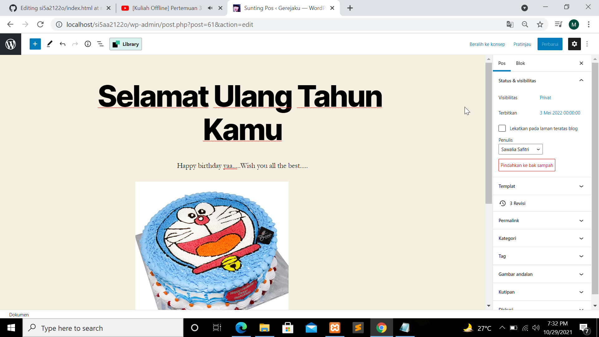

NIM : 1922500195
Nama : Meilianda Aryanti Abelia
Kelompok : SI5A
Hasil kesimpulan pertemuan 3 yang saya ambil adalah:
- Jika ngambil file bapak atau pertemuan berikutnya, pertama download file setelah itu ubah nama filenya, taruh di htdocs, terus buka file mysqlnya di sublime ctrl+h find localhost/si5a21220 dan direplace dibawahnya menjadi localhost/si5aa21220 terus klik replace all
- Jika waktu import databasenya error bearti ubah di sublime text di ctrl+h, dari db_si5a2122o menjadi db_si5aa2122o dan klik replace all
- Kemudian cari dihtdocs yg file si5aa2122o cari wp-config terus ubah yang db_name nya menjadi db_si5aa2122o
- Di jendela posting itu ada block visual dan html, kalo mau mengubah menjadi html, pilih yang titik 3 terus klik sunting sebagai html.
- Jika mau membuat teks pragraf justify ubah terlebih dahulu ke mode html dan tambahkan justify di class atau align=justify, kalau masih tidak rata kiri kanan bearti tidak semua tema support justify
- Jika konten yang sudah kita post ada salah dalam penulisan, pilih konten tersebut pilih sunting dan klik yang atas(beralih ke konsep).
- Cara memindahkan foto tanpa harus koneksi internet tanpa mengaktifkan data download ataupun tanpa kabel data yaitu pakai WIN SCP untuk laptop dan File Manager Plus untuk HP
- Status postingan:
- Draft (konsep), maksudnya misal kita mau bikin konten nih terus baru buat judulnya saja isi nya masih dikit dan bingung mau lanjutin dari pada langsung klik diterbitkan mendingan klik simpan konsep dulu.
- Publish, yang sudah diterbitkan yang otomatis sudah dilihat orang hasilnya.
- Pending Review, tulisan yang perlu ditinjau minimal editor atau administrator dibuat oleh kontributor.
- Scheduled (terjadwal), caranya dengan klik pos tambah baru kemudian klik pengaturan pilih pos dan atur terbitkan pada tanggal yang akan datang ,jangan sesudah kejadian.
Tampilan pengaturan pos published
